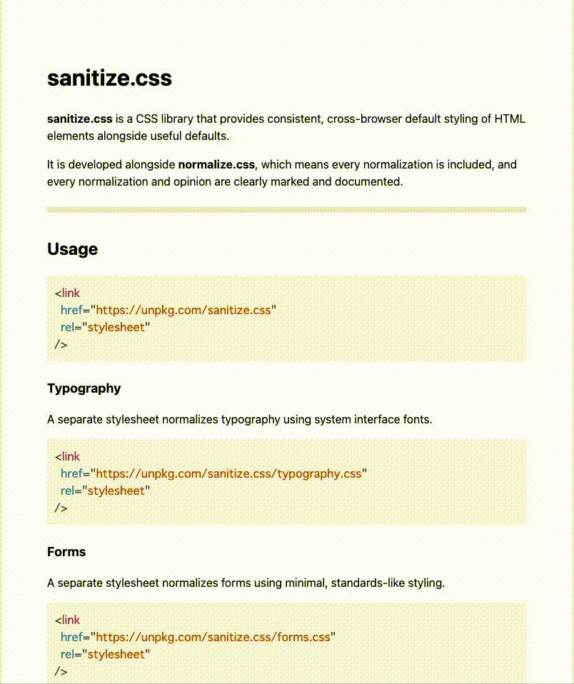
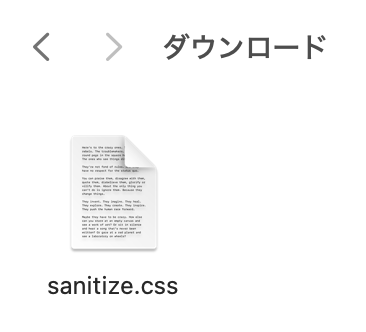

htmlでコードを書いていく時、元々paddingやmarginなどが最初から設定されている箇所があります。
その設定をリセットしてくれるファイルのことをリセットcssと言います。
リセットするためには、cssが書かれている特定のファイルを読み込ませる必要があります。
ファイルを読み込ませるだけでリセットしてくれるので、とても便利です。
リセットすることで、どのブラウザでも同じような表示がされるようになるので、
「このパソコンで見たときは〇〇のように見えるのに、
他のパソコンで見たら違って見える！」ということがなくなります。
サイトを作る際に、「パソコンやブラウザによって見え方が違う」ということが起こってはいけないので
（見え方が違うと困惑したり問題に繋がる可能性があります）リセットcssを最初に読み込ませる必要があります。
リセットcssには、たくさん種類がありそれぞれのファイルごとに特徴があります。
例えば、リストの黒点を最初から消してくれていたり、すべての要素に「background-repeat: no-repeat; 」（画像を繰り返し表示させないという命令）
を適用してくれていたりと、一つ一つのファイルによってリセットされる内容が異なります。
最低限のスタイルを与えつつ、不必要な箇所をリセットしてくれる「sanitize.css」が使いやすいのでおすすめです。
今回はこのリセットcssを読み込んでいきます。
リセットcssはGoogleなどで検索し、そこから引っ張ってきて読み込みを行います。
無料で公開されており、誰でも使用することが出来ます。
①Googleで「sanitize.css」と検索すると一番上に出てきますが、今回はこちらのリンクから飛んでください。
「sanitize.css」
②動画のように、下までスクロールしてDownloadをクリックしてください。
③写真のようなファイルがダウンロードされているので、現在作っているhtmlとcssと同じフォルダに入れます。
④最後に、このファイルを読み込むためのコードをhtmlファイルに書いていきます(6行目)
書き方は、いつもcssを読み込ませるために書く方法と全く同じです。
<!DOCTYPE html>
<html lang="ja">
<head>
<meta charset="UTF-8">
<meta name="viewport" content="width=device-width, initial-scale=1.0">
<link rel="stylesheet" href="sanitize.css">
<link rel="stylesheet" href="style.css">
<title>リセットcss</title>
</head>
気を付ける点として、後に書いたcssの方が優先されるので、style.cssよりも前に書かないといけません。
（リセットcssはあくまでリセットをする、最初の土台を作るcssでありメインではないためstyle.cssよりも前に書く必要があります）
これでリセットcssの読み込みは完了です！